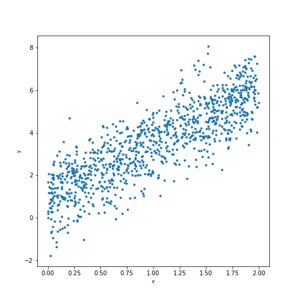

Root Mean Squared Error
A typical way of measuring the difference between observations and results from a predictor.
The formal definition is:
\[ \begin{aligned} RMSE(\hat{\theta}) &= \sqrt{\operatorname{MSE}(\hat{\theta})} \\ &= \sqrt{\operatorname{E}((\hat{\theta}-\theta)^2)}. \end{aligned} \]For \(N\) observations \(Y=\{y_1,\dots,y_N\}\) we can express it as:
\[ RMSE=\sqrt{\frac{\sum_{n=1}^{N}(\hat{y}_{n}-y_{n})^{2}}{N}}. \]Example
import numpy as np
X = 2 * np.random.rand(1000,1)
X_b = np.c_[np.ones((1000,1)), X]
Y = 1 + 2.5 * X + np.random.randn(1000,1)
